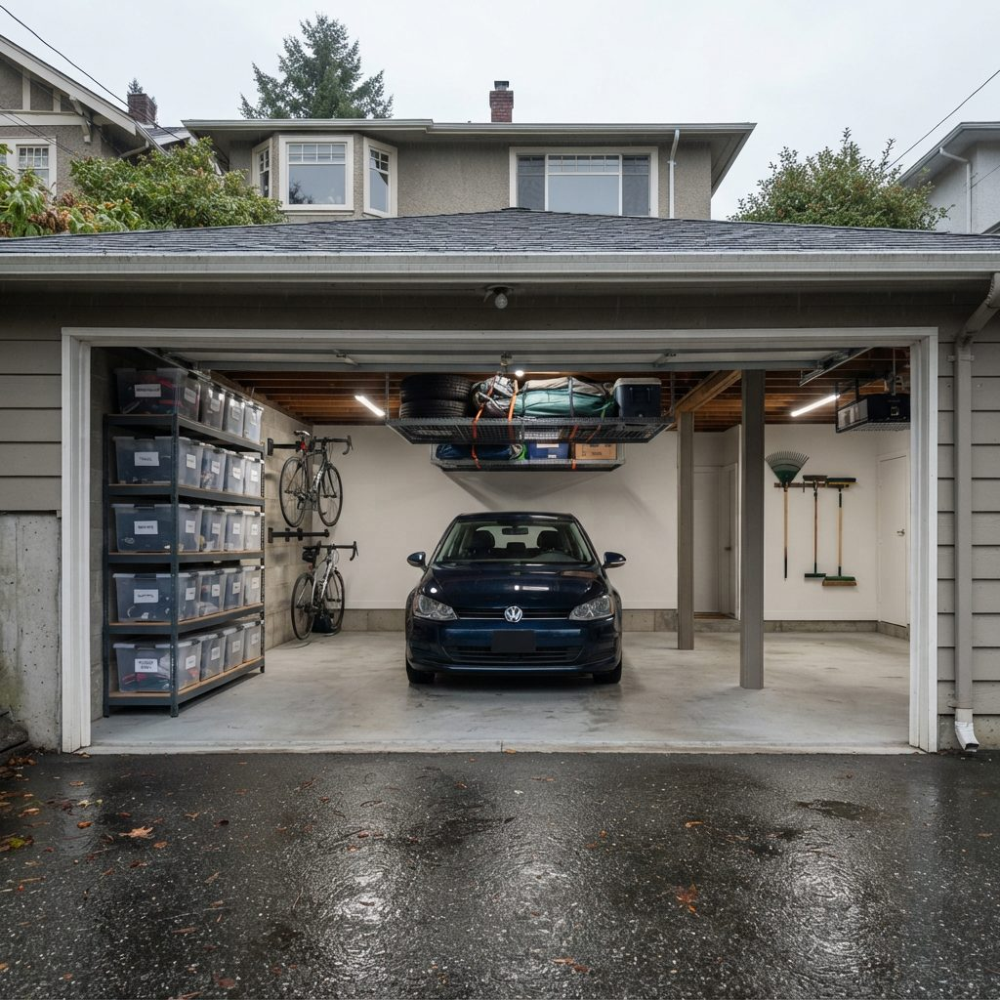
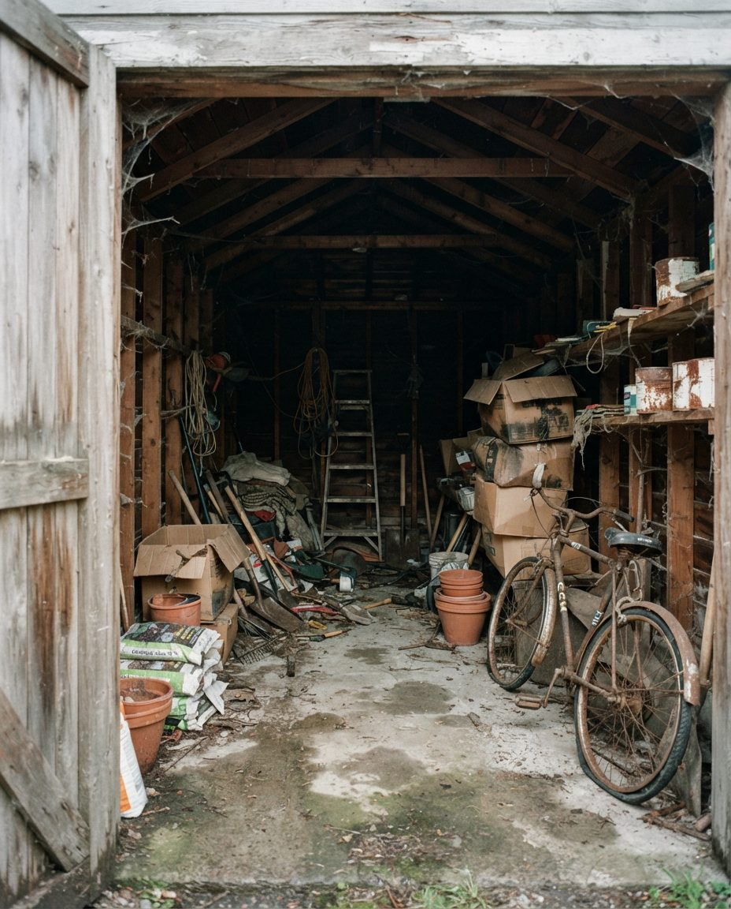
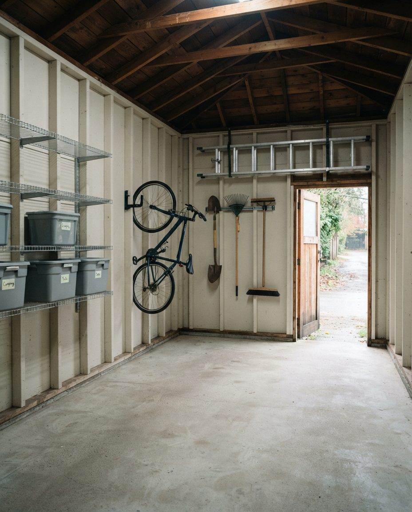
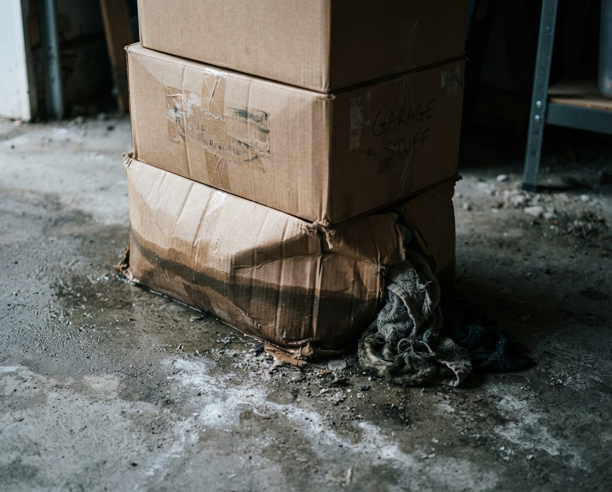
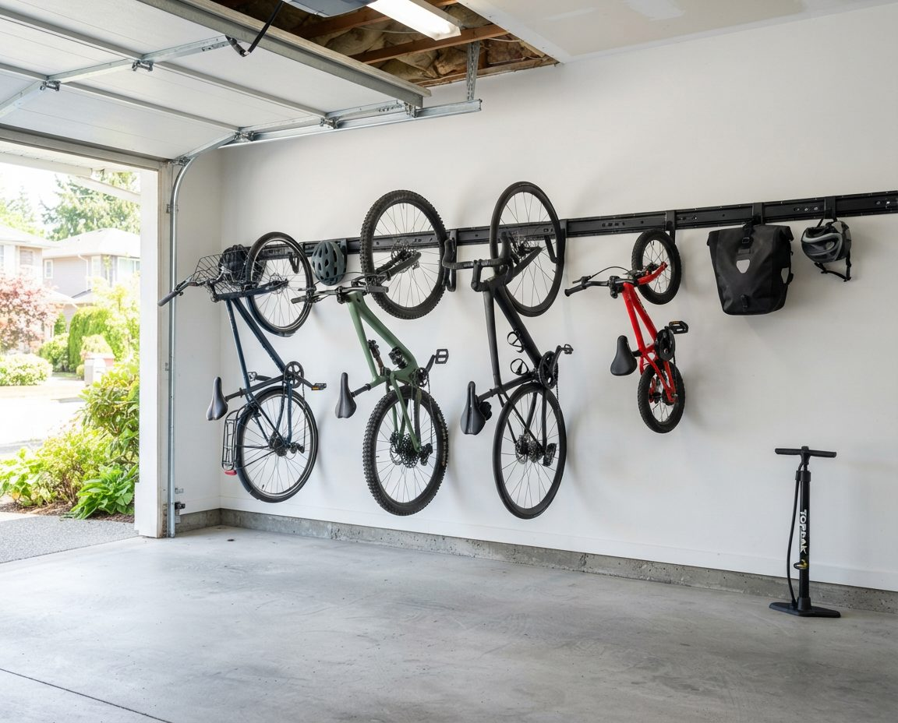
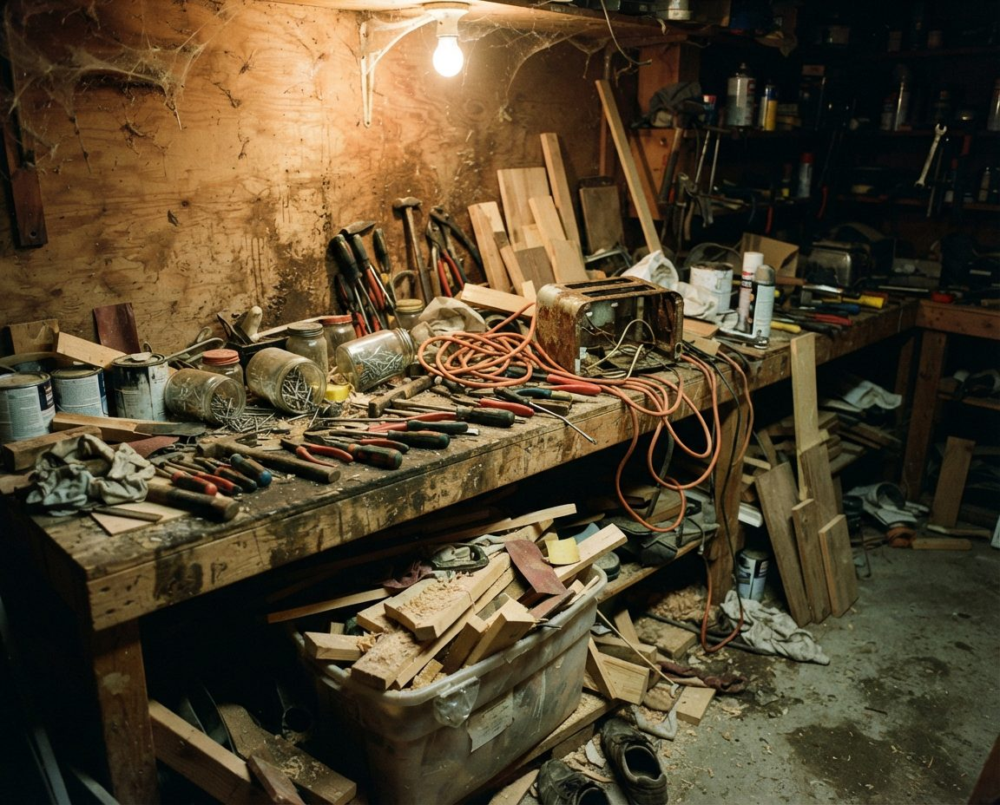
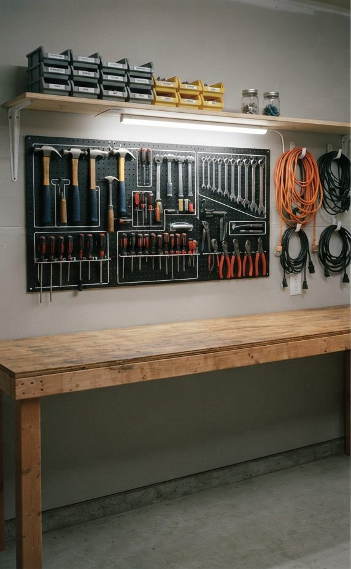
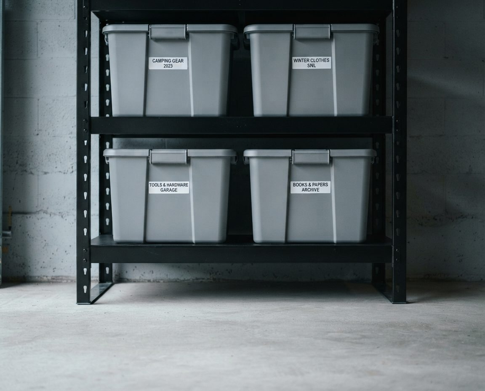

Kerrisdale garages come in three kinds: the narrow wooden lane garage behind a character house, the double garage in a rebuilt home, and the shrunken storage space left on a lot that now has a laneway house. We organize all three so the car or the bikes fit, the hockey bag dries out between games, and nothing you want to keep spends the winter in cardboard on a damp slab.

Kerrisdale took its name in 1905, when Mrs. William McKinnon named the BC Electric Railway interurban stop at Wilson Road, now West 41st Avenue, after her family home in Scotland. The area belonged to the Municipality of Point Grey until it joined Vancouver on January 1, 1929. Most residents put the neighbourhood between West 33rd and West 57th Avenues, from Granville Street to Blenheim Street, with Southlands on the Fraser River floodplain in the southwest corner.
That history left a mixed housing stock, and the garage behind each house tells you which era it came from. On a single block you can find:
North of 41st, apartments and condos add a fourth case: a storage locker and one parking stall. Each needs a different plan, so the first visit starts with measuring the space and the car, and asking who uses the garage and for what.
Kerrisdale has about 50 buildings on the Vancouver heritage inventory, and the garages behind houses of that age were often added after the house. One example: a two-and-a-half-storey Craftsman on West 42nd Avenue appears on city maps from before 1912, and building permits show a garage or room added for the family who lived there in 1928. Garages from that period were built for narrower cars, with less clearance and no insulation.
So we organize from the side walls and the ceiling. Shelving on the long walls is kept shallow, usually 30 to 40 cm, so a car door can still open. Bikes hang by the wheel on the wall nearest the lane door. An overhead rack takes the seasonal bins, but only where the rafters are sound and the door swing is clear. If the car will not fit with the doors open, we tell you on the first visit and plan the garage as a storage, bike and garden room instead, with the car on the pad outside.


Side walls and rafters do the workAn example layout, not a photo of a Kerrisdale client's garage. In a narrow detached garage, shallow shelving on one wall and hooks by the door leave the full width of the floor clear.
Before anything goes on the walls of an old garage, we check what it will hang from. Studs in these buildings are often spaced irregularly and sometimes patched, and heavy loads go on freestanding shelving fixed back to the frame. Our earthquake-ready garage storage guide explains why we strap tall units and keep the heavy items low. When the garage is so full that the first step is clearing it, our laneway garage clearing service handles that before the build.
Vancouver airport records precipitation on about 169 days a year, and November, January and December each average more than 170 mm. A detached lane garage has no heat and a lot of gaps, so from October to March it sits at roughly outdoor humidity. Kerrisdale's mature tree canopy adds leaves in the gutters and moss on the roof, and in Southlands the ground on the river floodplain stays wet through winter.

Cardboard pulls that moisture up from the slab and out of the air, then sags, stains and smells. Photos, documents, holiday decorations and sleeping bags stored in it are the usual casualties. Our rules for any West Side garage are simple: nothing stored in cardboard, nothing touching the floor, and nothing pressed against an outside wall. Lidded plastic bins go on shelving with the bottom shelf at least 15 cm off the slab, the units stand a few centimetres off the wall, and the first metre inside the overhead door stays clear for wet tires and wind-driven rain. Things that cannot handle damp at all, such as paper archives and family photos, move into the house.
If you already see black spots on drywall, a white mineral crust on the concrete or a musty smell that does not leave, read our page on mould in Vancouver garages first, because we treat those surfaces before we put new storage against them.
The Arbutus Greenway runs north and south through the middle of Kerrisdale on the old CPR rail line, which the City bought and turned into a walking and cycling route. It makes the bike the easy way to get to Kerrisdale Village on 41st, to the schools (Kerrisdale Elementary, Magee, Point Grey Secondary and Crofton House among them) and north toward Kitsilano. Many Kerrisdale garages now hold a commuter bike, kids' bikes, an e-bike and sometimes a cargo bike, which takes the floor space of a small car.

We hang the light bikes by the wheel on a rail, keep the heaviest bike on the floor nearest the door, and put helmets, locks, lights and rain gear on a shelf beside them so the morning routine happens in one spot. E-bikes and cargo bikes stay on the floor with a marked parking space and a charging spot on a clear, hard surface away from stored bins and the path out of the garage. Our garage bike storage in Vancouver page covers racks and hoists in detail, and the EV charger garage guide covers the car side of charging.
Kerrisdale Cyclone Taylor Arena on East Boulevard was built in 1949 as a hockey rink and still runs skating and drop-in hockey. Two blocks away, the Kerrisdale Community Centre at 5851 West Boulevard has the indoor pool, and Elm Park has tennis, baseball, soccer and lawn bowling. In a family garage that means hockey bags, skate bags, swim bags, racquets and soccer gear coming home wet several times a week.
Wet sports gear needs air, so it gets its own station away from the stored bins: a drying rack or wall tree where the hockey bag is emptied after every game, open wire shelving for skates, pads and cleats, and hooks for towels and swim bags. The station goes near the house door so the gear makes it out of the car, and in an unheated garage we often suggest a small fan on a timer for the hockey bag in midwinter. Out-of-season gear, such as summer baseball bats in January, goes into labelled bins on the high shelves.
The large modern houses built in Kerrisdale from the mid-1980s on usually came with a proper double garage. These garages have the space; they fail because every project, every renovation leftover and every hand-me-down lands on the nearest flat surface. Kerrisdale Lumber has sold to the neighbourhood since 1921, and plenty of West Side garages hold the tools and offcuts from decades of home projects.


A bench you can work onAn example workbench, not a photo of a Kerrisdale client's garage. Tools go on a pegboard in reach of the bench, cords on hooks, and only the current project stays on the surface.
In a double garage we usually give one wall to the workshop and the other to household storage, with the bikes and sports station near the house door. Old paint and solvents get sorted on the day, with usable tins kept on a low shelf and the rest set aside for a recycling drop-off. Long lumber and offcuts are cut down to what you will use or go out with us. For hardware chosen for a coastal garage, see our garage storage solutions in Vancouver.
Vancouver's first laneway house built under the 2009 bylaw was approved for occupancy in 2010, and the rules were updated in 2013. A laneway house sits on the back half of the lot, in the space that usually holds the garage. On a Kerrisdale lot that often means the family that once had a garage now has a parking pad, a carport or a small shed, and the laneway house has storage of its own for a tenant or a relative.
Storage on these lots has to be smaller and more deliberate. We sort what came out of the old garage, cut it to what will fit, and build vertical storage in whatever space remains: a wall of bins in a basement room, a bike and garden tool wall under a carport, or a shed shelved to the roof. Each household on the lot gets its own labelled zone so there is no argument about whose cooler that is.
In the 2011 census about one in six Kerrisdale residents was 65 or older. Many long-time owners move from a house with a garage into one of the apartments or condos north of 41st, near the Village shops, and have to fit decades of storage into a locker.

We work through the garage with you and your family, measure the new locker, and pack only what fits into labelled bins that stack on its shelving. Everything else goes to family, donation or disposal on the day, and we keep a list of where things went. When the job is a full clearance before a sale, our garage cleanout service in Vancouver handles it, and our garage decluttering service is the gentler version when you are staying put.
The first visit is free. We walk the garage, measure the car, the doors and the ceiling, check the walls and the slab for damp, and give you a written plan and a fixed price. On the day we empty the garage onto the driveway or the lane, sort into keep, donate, recycle and dispose, clean the empty floor, then build back in: daily items and the bike and sports station first, then the workshop, then seasonal storage. A single lane garage is usually half a day to a day; a double garage is usually one day. Donations and disposal leave with us.
Shelving, bins, rails and hoists are quoted separately at cost, and we are glad to reuse sound shelving you already own. For the city-wide version of this service, see garage organization in Vancouver.
Service pricing below. Shelving, bins, rails and hoists are quoted separately at cost. Unusual garages are quoted after the site visit.
We organize garages across Kerrisdale, from West 33rd Avenue down to West 57th and from Granville Street to Blenheim Street, including Southlands, the streets around Kerrisdale Village and the blocks along the Arbutus Greenway. Next door we work in Dunbar, Arbutus Ridge, Shaughnessy, Point Grey, Oakridge and Marpole, and across the rest of the city and region, from West Vancouver to Burnaby. Every city we serve is listed on our Metro Vancouver services page. GarageScape started in Alberta, where the garage storage we build in Calgary is designed for frost and road salt, and our garage decluttering in Calgary is still where most of our Alberta work begins.
All of it, using the boundaries most residents use: West 33rd Avenue to West 57th Avenue, and Granville Street to Blenheim Street, including Southlands. We also work next door in Dunbar, Arbutus Ridge, Shaughnessy, Point Grey, Oakridge and Marpole.
Often, yes, as long as the storage goes up the side walls and overhead instead of across the floor. Many lane garages behind Kerrisdale character homes were built for much smaller cars, so we measure the car, the door opening and the space to open a car door before we choose shelf depths. Where the car will not fit, we turn the garage into a well-organized storage and bike room and say so up front.
Vancouver sees precipitation on about 169 days a year, and November, December and January each average more than 170 mm at the airport. An unheated wood-frame lane garage sits at outdoor humidity all winter, and cardboard and fabric soak it up. We move stored items into lidded plastic bins on shelving raised off the slab and held off the outside walls so air can move.
Usually into less space than before: a carport, a single parking pad with a shed, the laneway house's own storage, or a basement room. We sort what you have, cut it down to what fits, and build vertical storage for the rest, with bikes and garden tools closest to the lane.
Yes. Families who skate at Kerrisdale Cyclone Taylor Arena or swim at the Kerrisdale Community Centre pool get an open drying station: a wall rack or tree where the hockey bag is emptied after every game, open wire shelving for skates and pads, and hooks for wet towels and swim bags, set away from the stored bins.
Organization starts at $549 for a single or tandem garage, $899 for a standard double, and $1,800 for a full transformation that bundles decluttering, a deep clean and the organization build. Shelving, bins, rails and hoists are quoted separately at cost, and we reuse what you already own where it is sound.
Free on-site visit. We measure the garage, check it for damp, plan what each wall holds, and give you a written plan and fixed price before we start.
Serving Kerrisdale, Southlands, Dunbar, Arbutus Ridge, Shaughnessy and the rest of Metro Vancouver.